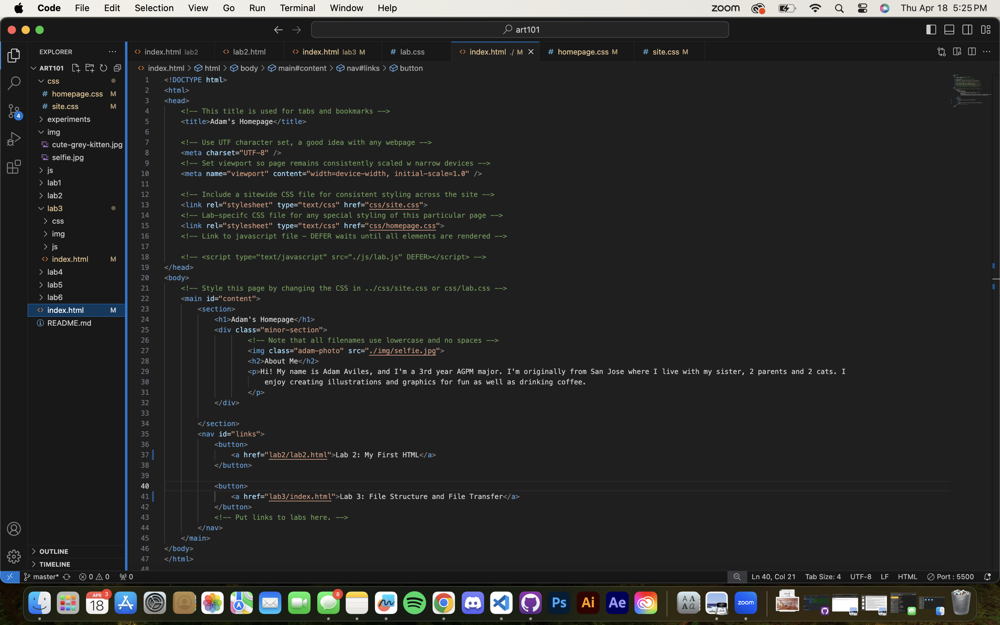
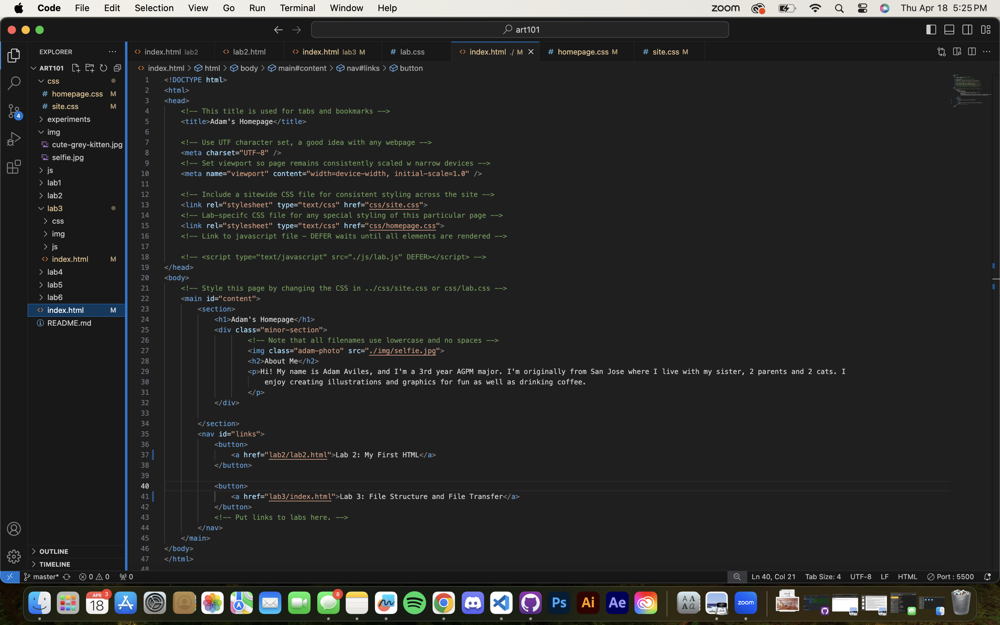

Lab 3 - File Structure and File Transfer
Challenge
The challenge if this lab is to recognize the fie structure and how to navigate within the directories.
Problems
Some small issues were just keeping track of which directory I was in when linking it to other files.
Reflection
While initially challenging, once I was able to keep track of everything, the rest of the lab went smoothly.
Results
 
